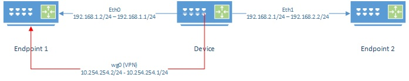

Hardware Benchmark
Lab setup
Device Device being tested
Endpoint1, Endpoint2 Devices not limited by CPU or network.

Instructions below are non-persistent. When device is restarted changes will be removed. wireguard package must be installed.
Device Lab Configuration
Configure interfaces
Configure the IP addresses on each interface
eth0 Interface on device connected to Endpoint 1
eth1 Interface on device connected to Endpoint 2
If the device has only one port, see Appendix A - Single Port Router to split the single port into two VLANs.
ifconfig eth0 NETMASK 255.255.255.0
ifconfig eth0 192.168.1.1 up
ifconfig eth1 NETMASK 255.255.255.0
ifconfig eth1 192.168.2.1 up
Note: You can add other IP addresses to an interface by using the ethx:x notation such as eth0:1. This can be used to add your home IP address alongside the lab's IP address and share the same switch
For example ifconfig eth0:1 192.168.10.1
Enable Routing
Most Linux distributions have routing disable. Enable it.
echo 1 > /proc/sys/net/ipv4/ip_forward
WireGuard
Configure a WireGuard server. Create a configuration file wg0.conf containing a private/public key.
NOTE: Do not use these keys in production!
cat <<"EOF"> wg0.conf
[Interface]
PrivateKey = 4LMdS6DPRe5gHcmMWYhZqlM9PzFTEeDz0kz0YIMCPm0=
ListenPort = 1000
[Peer]
PublicKey = //C9KkNgCgT/0+bIb6YMS558xNx6wJOwAuGbqO8CGlI=
AllowedIPs = 0.0.0.0/0
AllowedIPs = ::/0
EOF
Bring up the wg0 interface using above configuration
ifconfig wg0 down
ip link del dev wg0
ip link add dev wg0 type wireguard
wg setconf wg0 wg0.conf
ip addr add 10.254.254.1/24 dev wg0
ifconfig wg0 up
Endpoint1 Lab Configuration
Configure interfaces
Configure the IP addresses the interface. Make the default route the Device.
eth0 Interface on device connected to Device
ifconfig eth0 NETMASK 255.255.255.0
ifconfig eth0 192.168.1.2 up
ip route add 0.0.0.0/0 via 192.168.1.1
WireGuard
Configure a WireGuard client. Create a configuration file wg0.conf containing a private/public key.
NOTE: Do not use these keys in production!
cat <<"EOF"> wg0.conf
[Interface]
PrivateKey = cFP6gBOZrvqlt/XkdT7Cp6HOLuNMYa6yVNcCR+e9IEw=
ListenPort = 1000
[Peer]
PublicKey = 1510YjIH8EfQtJ2zxEEUb5+1B4HqmIv86pwpkJwNOW4=
AllowedIPs = 0.0.0.0/0
AllowedIPs = ::/0
Endpoint = 192.168.1.2:1000
EOF
Bring up the wg0 interface using above configuration.
ifconfig wg0 down
ip link del dev wg0
ip link add dev wg0 type wireguard
wg setconf wg0 wg0.conf
ip addr add 10.254.254.2/24 dev wg0
ifconfig wg0 up
Endpoint2 Lab Configuration
Configure interfaces
Configure the IP addresses the interface. Make the default route the Device.
eth0 Interface on device connected to Device
ifconfig eth0 NETMASK 255.255.255.0
ifconfig eth0 192.168.1.2 up
ip route add 0.0.0.0/0 via 192.168.2.1
Testing
iperf3 package must be installed. During iperf3 tests there are several things to remember:
-
iperf3, when run on device with low CPU resources, can consume CPU power to generate packets. Speed when transmitting will be slower than when receiving since the CPU will be taxed more
- using the
--repeating-payloadflag can reduce the stress placed on the CPU by not generating random data to transmit
- using the
-
CPU load can be seen by using the
topcommand during the test -
Watching
/proc/interruptscan also show where CPU cycles are being spent -
Some devices have hardware offloading that can increase performance when routing through the device
Interface speed
This will test the interface speed between the Device and Endpoint1.
On Endpoint1:
iperf3 -s
On Device:
-
Test Forward speed
iperf3 -c 192.168.1.2 -
Test Reverse speed
iperf3 -c 192.168.1.2 -R
WireGuard to WireGuard
This will test the interface speed over WireGuard.
On Endpoint1:
iperf3 -s
On Device:
-
Test Forward speed
iperf3 -c 10.254.254.2 -
Test Reverse speed
iperf3 -c 10.254.254.2 -R
Endpoint2 through Device to Endpoint1
This test will show how well the Device can route packets between subnets.
On Endpoint1:
iperf3 -s
On Endpoint12:
-
Test Forward speed
iperf3 -c 192.168.1.2 -
Test Reverse speed
iperf3 -c 192.168.1.2 -R
Endpoint2 through Device over WG to Endpoint1
This test will show how well the Device can route packets between subnets while encrypting traffic over the wg0 interface.
An additional route needs to be added on Endpoint1 to send all packets back over wg0 when doing reverse test.
On Endpoint1:
ip route add 192.168.2.0/24 dev wg0
iperf3 -s
On Endpoint2:
-
Test Forward speed
iperf3 -c 10.254.254.2 -
Test Reverse speed
iperf3 -c 10.254.254.2 -R
On Endpoint1 (once completed test):
ip route delete 192.168.2.0/24 dev wg0
Appendix A - Single Port Router
If a device only has one port, routing can be accomplished using 2 VLANs and a switch. You may required to use modprobe 8021q to enable VLAN support.
Device VLAN Configuration
Split the interface into two VLANs creating 2 interfaces called eth0.10 and eth0.11.
apt-get install vlan
vconfig add eth0 10
vconfig add eth0 11
Switch Configuration
When a managed switch is used, port connected to the device should be configured as a trunk or general mode and VLAN 10 and 11 set as tagged. Two other ports on the switch should then be configured as access to VLAN 10 and VLAN 11 respectively. In this setup the VLAN is transparent to Endpoint 1 and Endpoint 2.
When an unmanaged switch is used, Endpoint 1 and Endpoint 2 must be configured to use access the VLAN directly.
Endpoint 1 VLAN Configuration
apt-get install vlan
vconfig add eth0 10
Endpoint 2 VLAN Configuration
apt-get install vlan
vconfig add eth0 11